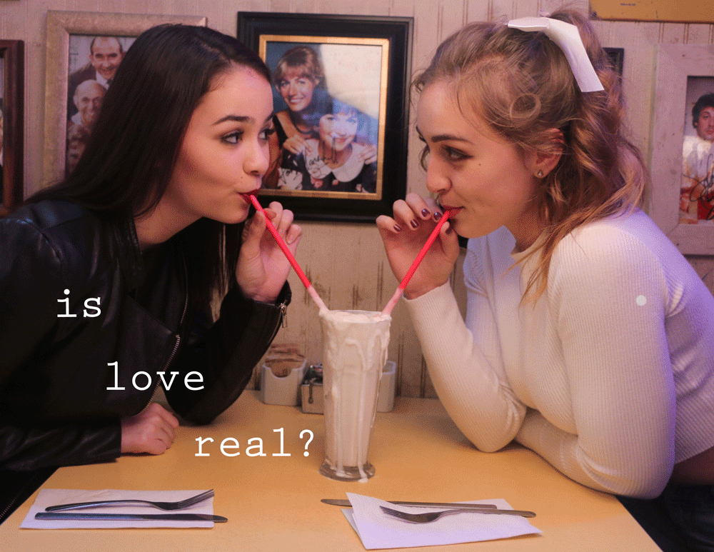
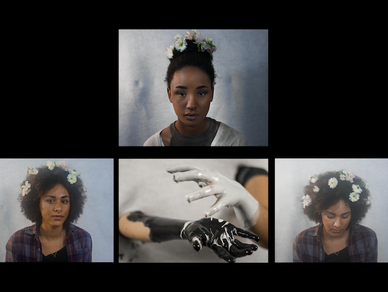
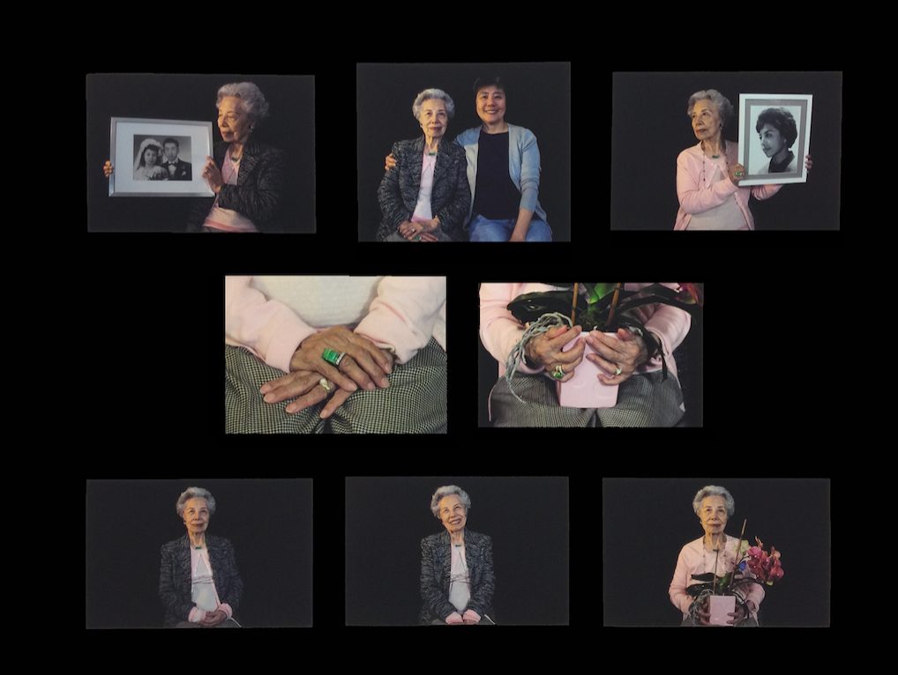

The feeling of being hopelessly and utterly attached to someone.
--
Shot on a 35 mm Canon AE-1 and edited in Adobe Lightroom/Adobe Photoshop.

Is Love Real?
An animated photo series that tells a story of a past relationship I had by utilizing old text messages from said relationship.
--
Shot on Canon EOS 600D and edited in Adobe Lightroom and Photoshop.
Compiled in Adobe Indesign and made in to a gif through Adobe Photoshop.

Empowerment
An exposé meant to show the beauty of traditionally Black features and femininity that is often unseen due to white washing and the upholding of the racist idealization of White European features.
--
Shot on Cannon EOS 600D and edited in Adobe Lightroom.
Put together in Adobe Indesign.

Generations
An exposé meant to show the beauty of traditionally Black features and femininity that is often unseen due to white washing and the upholding of the racist idealization of White European features.
--
Shot on Cannon EOS 600D and edited in Adobe Lightroom.
Put together in Adobe Indesign.